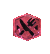
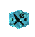
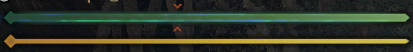
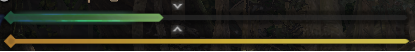

| 헌터 | 동반자 | |
|---|---|---|
| 공격력UP[소] | 5 | 7 |
| 공격력UP[중] | 10 | 14 |
| 공격력UP[대] | 15 | 20 |
| 방어력UP[소] | 5 | 7 |
| 방어력UP[중] | 10 | 14 |
| 방어력UP[대] | 15 | 20 |
| 속성내성UP[소] | 5 | 7 |
| 속성내성UP[중] | 10 | 14 |
| 속성내성UP[대] | 15 | 20 |
| 스킬 | 효과 |
|---|---|
| 야옹! 뒤는 맡겨둬! | 힘이 다했을 때 범위 안에 있는 동료의 체력을 회복 |
| 야옹 폭격 |
통상탄, 관통탄, 산탄, 기폭용탄, 기관용탄, 저격용탄의 공격력 1.05배 사격 시 흔들림이 1단계 증가 |
| 야옹 운반 철인 | 운반 중 공격을 받아도 움츠리지 않음 |
| 야옹 오뚝이술[소] | 넘어졌다 일어날 때의 무적시간이 조금 증가 |
| 야옹 동반자 지도술 | 동반자의 성장이 빨라짐 |
| 야옹 보너스술 | 힘이 다해도 식사효과가 사라지지 않음 |
| 야옹 휴식술 |
'앉기' 제스처를 선택한 순간부터 5초 후 이펙트 발생 일어난 후부터 30초간 공격력 상승 |
| 야옹 억지술 |
공격이 튕겨나간 뒤 곧바로 이어지는 공격에 공격력 1.05배 * 연속으로 튕길 시 1.05 x 1.05 x..의 방식으로 공격력 증가 * 차지액스의 오버히트 상태에 의한 공격튕김에도 발생 |
| 야옹 비료옥 달인 | 슬링어 거름탄을 맞힌 몬스터가 도망칠 확률이 높아짐 |
| 야옹 배달술 | 운반 중 대시했을 때의 스태미나 소비 감소 |
| 야옹 단기 최면술 | 퀘스트 시작 후 혹은 식사 후 10분간 공격력 +9, 방어력 +15 |
| 야옹 탐색하기 좋은날 | 탐색으로 조사보고서를 입수할 확률이 높아짐 |
| 야옹 착지술 |
높은 곳에서 뛰어내려도 바닥에 손을 대지 않음 알 운반 중 높은 곳에서 뛰어내려도 알을 떨어뜨리지 않음 |
| 야옹 넝쿨타기 달인 |
벽이나 넝쿨에 매달린 상태에서 회피 행동으로 소비되는 스태미나 양 감소 |
| 야옹 낚시 고수 | 물고기를 잡을 확률이 높아짐 |
| 야옹 일기예보 | 출발한 퀘스트가 악천후가 될 확률이 높아짐 |
| 야옹 도주술 | 대형 몬스터 에게서 도망칠 때 스태미나 소비량 감소 |
| 야옹 장화술 | 지형에 의한 데미지나 피해를 줄이고 무효화 |
| 야옹 미움받기 고수 | 몬스터의 주의를 끌어서 표적이 될 확률 증가 |
| 야옹 튕겨내기 고수 | 공격이 튕겼을 때 예리도 소모량 1/2 |
| 야옹 매달리기 철인 | 벽이나 넝쿨에 매달린 상태에서 공격을 받아도 어느정도 버팀 |
| 야옹 방어술[소] | 플레이어가 받는 데미지를 낮은 확률로 감소시킴 |
| 야옹 방어술[대] | 플레이어가 받는 데미지를 높은 확률로 감소시킴 |
| 야옹 보수금 보험 | 퀘스트 동료 누군가의 힘이 다해도 처음 1회는 무효처리됨 |
| 야옹! 약한놈 덤벼! | 퀘스트에 출현하는 대형 몬스터가 약해질 확률이 증가 |
| 야옹 해체술[소] | 갈무리 횟수가 낮은 확률로 증가 |
| 식재료분류 | 조건 | 스킬 | 효과 |
|---|---|---|---|
|
 용감 |
X2 | 야옹 연마술 | 숫돌 사용 시 연마동작 1~3회 단축 |
| X4 | 야옹 탑승 고수 | 몬스터에게 탑승하기 쉬워짐 | |
| X6 | 야옹 KO술 | 기절 능력이 있는 공격의 기절치 상승 | |
|
 인내 |
X2 | 야옹 낙법술 | 날아가는 공격을 받았을 때 자세를 고쳐세움 |
| X4 | 야옹 버티기술 | 엉덩방아를 찧지 않음 | |
| X6 | 야옹 근성 |
체력이 64이상일 때 즉사 데미지를 받아도 힘이 다하지 않고 체력 1남음 (1번 한정) * 통상스킬인 [근성Lv1]과 효과 중복되어 2회발동 가능 스킬 발동 시 통상스킬 먼저 사용됨 * 스킬 발동 중 체력바 근성발동 최소 체력위치에 화살표 표시됨  < 근성 발동 유효 >  < 근성 발동 무효 > |